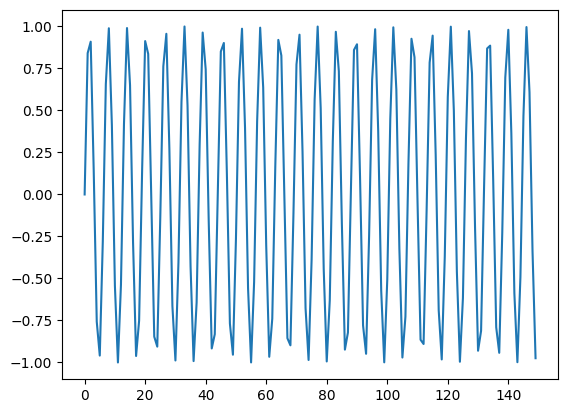

x = np.arange(150)
y = np.sin(x)
plt.plot(x,y)
Felipe Bereilh
February 26, 2024
Welcome, fellow data wranglers, number crunchers, and curious minds to the whimsical world of feature engineering, where the Weight of Evidence (WoE) isn’t a medieval trial by ordeal, but an equally thrilling adventure in the realm of data science and machine learning.
Ever wondered how to make your categorical variables strut down the runway of logistic regression models in continuous scale couture? Enter the stage, WoE transformation, the unsung hero that turns the chaos of categories into a harmonious melody of numbers. This statistical technique is like a magical wand that, with a flick, transforms your raw data into insightful, model-friendly information. It’s not just about making the numbers work; it’s about making them sing and dance to the tune of predictive modeling.
But why, you ask, should we care about this seemingly arcane ritual? Because, dear reader, in the hands of a skilled practitioner (that’s you after reading this guide), WoE can unveil the secrets hidden within your data, making your models not just smarter but also storytellers of the unseen patterns in the world of finance, risk, and beyond. Imagine being the wizard whose spells (models) can predict the future, or at least the likelihood of someone defaulting on a loan.
So buckle up, grab your wizard’s hat (or your data scientist’s cap, if you prefer), and join me on this exhilarating journey through the land of WoE. We’ll laugh, we’ll cry (hopefully from laughter), and we’ll learn how to transform our categorical variables into something that even your non-data-scientist friends might find mildly interesting at parties. Ready to turn your data into the life of the modeling party? Let’s dive in!
| 0 | 1 | 2 | 3 | 4 | 5 | 6 | 7 | 8 | 9 | ... | 20 | 21 | 22 | 23 | 24 | 25 | 26 | 27 | 28 | 29 | |
|---|---|---|---|---|---|---|---|---|---|---|---|---|---|---|---|---|---|---|---|---|---|
| 0 | 0.406981 | -0.771861 | 0.346655 | 1.854994 | 0.554467 | 1.095002 | 0.261151 | 0.878623 | -0.238031 | 1.164824 | ... | 0.914089 | -1.892482 | 0.748498 | 0.052570 | 0.213783 | -0.652685 | 0.572153 | -1.614777 | -0.788671 | 0.028114 |
| 1 | 0.724105 | 0.251463 | 0.013936 | 0.047881 | 1.179642 | 0.439079 | 1.521430 | 1.340585 | -0.199860 | -0.766495 | ... | -1.349073 | 1.872242 | 0.354088 | 0.413441 | 1.273878 | 1.528837 | 0.491234 | -0.741590 | -1.706747 | 0.290206 |
| 2 | 0.527707 | 0.415054 | 0.658073 | 0.610725 | 0.360359 | -0.709093 | -0.842654 | 0.027207 | -1.639340 | -0.450066 | ... | 0.008549 | -1.095318 | 0.503521 | 0.062693 | -0.844304 | 1.442239 | 0.068086 | 0.366560 | 1.792707 | 0.786167 |
| 3 | 1.031244 | -3.176727 | 1.557699 | -0.585789 | -1.662885 | 0.560411 | 0.397402 | 0.182252 | 0.313122 | -0.182105 | ... | 0.173442 | -0.758911 | 1.936924 | -0.043735 | 0.307891 | 0.538234 | -0.254141 | -0.842194 | -1.200074 | 0.957131 |
4 rows × 30 columns
https://www.analyticsvidhya.com/blog/2021/06/understand-weight-of-evidence-and-information-value/ https://www.listendata.com/2015/03/weight-of-evidence-woe-and-information.html https://www.statisticshowto.com/log-odds/